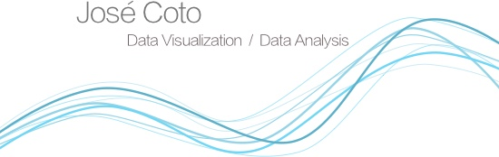

<div class="home">


	<div class="central-pic">
		
	</div>
  <div class="container">
  <ul class="post-list">
    {% for post in site.posts %}

        <li class="row post-container">
        <!-- <span class="post-meta">{{ post.date | date: "%b %-d, %Y" }}</span> -->
			<div class="col-md-4 text-center post-image" {% if post.image %} style="background-image: url('{{ post.image }}');" {% endif %}>
			</div>
			<div class="col-md-8">
        		<h2>
        		  <a class="post-link" href="{{ post.url | prepend: site.baseurl }}">{{ post.title }}</a>
        		</h2>
        		<div class="post_extract">
        			{{ post.excerpt }}
        		</div>
        	</div>
      </li>

    {% endfor %}
  </ul>
</div>
  <!-- <p class="rss-subscribe">subscribe <a href="{{ "/feed.xml" | prepend: site.baseurl }}">via RSS</a></p> -->

</div>
